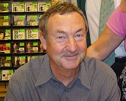
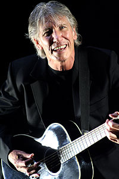
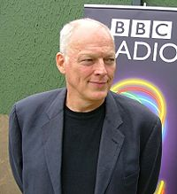
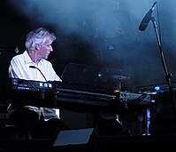
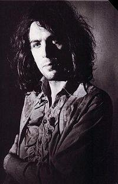

Pink Floyd é uma britânica de rock , formada em Londres em 1965, que atingiu sucesso internacional com sua música música psicodélica e progressiva. Seu trabalho foi marcado pelo uso de letras filosóficas, experimentações musicais, encartes de álbuns inovadoras e shows elaborados. O Pink Floyd é um dos grupos de rock mais influentes e comercialmente bem-sucedidos da história.
Pink Floyd foi fundada pelos estudantes Syd Barrett — como guitarrista e vocalista —, Nick Mason — como baterista —, Roger Waters — como baixista e vocalista — e Richard Wright — como tecladista e vocalista. Fundado em 1965, eles, inicialmente, tornaram-se populares tocando no cenário underground londrino, no fim dos anos 60. Sob a liderança de Barrett, lançaram dois singles de sucesso e um bem-sucedido álbum de estreia, The Piper at the Gates of Dawn, de 1967. David Gilmour foi integrado como o quinto membro em dezembro de 1967, enquanto Barrett saiu, em abril de 1968, por uma deterioração mental de motivos, até hoje, controversos. A partir deste período, a banda se readaptou, com a crescente ascensão de Waters como letrista e autor por trás dos conceitos de álbuns os quais tornaram-se notórios por parte do público e crítica, como The Dark Side of the Moon (1973), Wish You Were Here (1975), Animals (1977) e The Wall (1979).
| Foto | Nome | Data Nascimento | Instrumento |
|---|---|---|---|
|  | Nick Mason | 27 de janeiro de 1944 | baterista e compositor |
|  | Roger Waters | 6 de setembro de 1943) | baixista e vocalista |
|  | David Gilmour | 6 de março de 1946 | guitarrista, saxofonista, compositor e cantor britânico, vocalista |
|  | Richard Wright | 28 de Julho de 1943 | músico britânico, tecladista da banda |
|  | Syd Barrett | 6 de janeiro de 1946 | cantor, produtor, guitarrista e pintor |